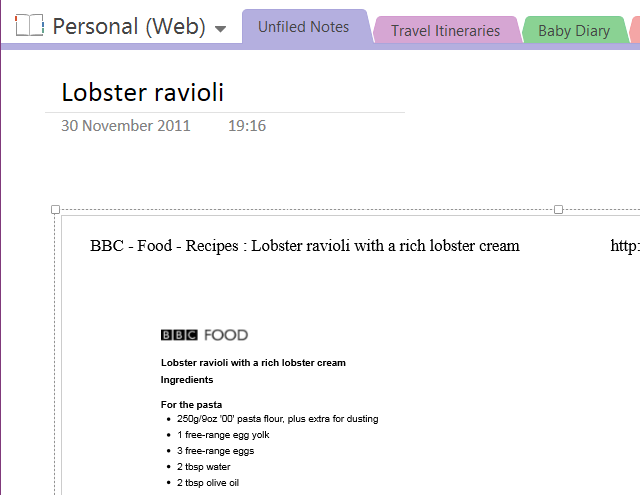
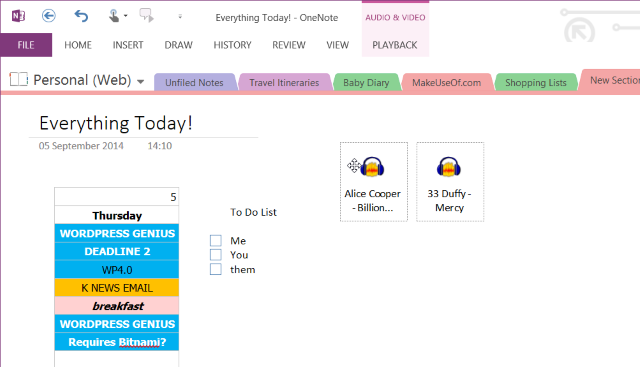
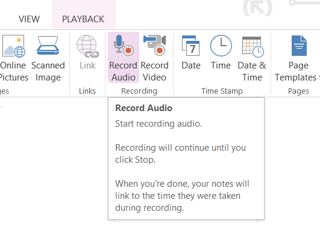
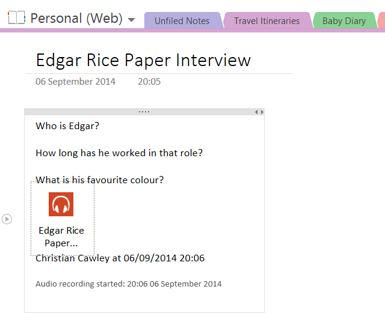
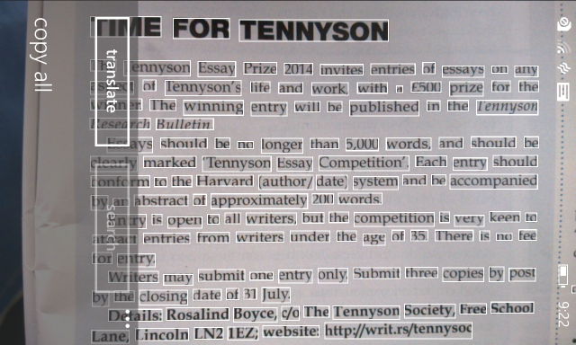
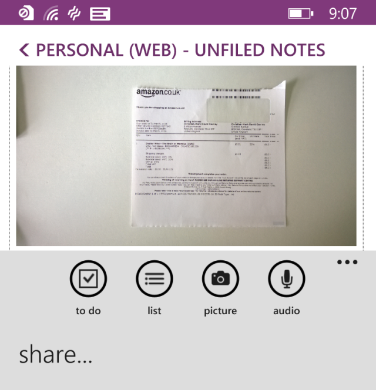
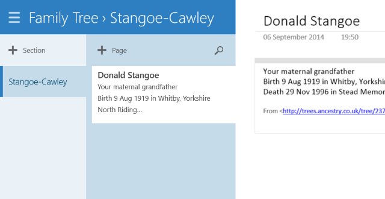

OneNote is one of Microsoft’s most underrated apps. Not only can you jot down notes or keep to do lists, you can use a stylus to do it, convert handwritten notes to text or organise your recipe collection. OneNote is available on almost every platform, making this ridiculously useful app even more relevant. The Perfect Modern Notetaking App: OneNote For Windows 8 The Perfect Modern Notetaking App: OneNote For Windows 8 Microsoft finally did something right! OneNote turns your Windows 8 tablet into a handy notebook. Quickly scribble down notes and pick them up anywhere. Syncing via SkyDrive automatically makes them available on the desktop. Read More
Although OneNote is available with good functionality on mobile devices, the tips below are mainly intended for running OneNote 2013 on Windows and Mac OS X.
Managing Your Shopping List
Ever arrived at the supermarket and found that you forgot what you went for? Even on a paper-based list, it’s easy to forget things if you haven’t got a pen to mark them off.
Back in 2010 when Windows Phone was released, one of the advertisements (in a Microsoft “multi-product” ad that also promoted Windows 7) featured a dad going shopping using OneNote on his phone as to view a shopping list that was updated by his cheeky sons as the trip went on. This was possible by using the same Microsoft account on the phone and the version of OneNote that was used to create the list. 5 Ways To Use Microsoft OneNote On Windows Phone 8 5 Ways To Use Microsoft OneNote On Windows Phone 8 Windows Phone users don't need Evernote; they have OneNote! It can handle images, voice notes, transcribe audio to text, sync to your desktop, and others can add to your notes. Care to learn more? Read More
You don’t have to use a Windows Phone to create and use a shopping list in OneNote, however, as the note-taking app is now available for Android and iOS (as well as Mac OS X). Simply create a list on one device, select the items and select Tag as To Do to add check boxes. While you’re shopping, mark off items as you go – and look out for your significant other sneakily adding 12 bottles of wine to the list!
Managing Recipes In OneNote
If you’re a bit of a foody (and if you’re also a Windows 8 user there are plenty of useful apps for you to gather recipes!) then it might interest you how easy it is to manage recipes in OneNote. Love Food & Healthy Recipes? Check Out These Windows 8 Apps Love Food & Healthy Recipes? Check Out These Windows 8 Apps Get great meal ideas for all types of diets. With a portable touchscreen device, you can even prepare your meals with your computer in the kitchen! Read More

You can approach this in different ways. Begin by creating a new section in your notebook and labelling it “Recipes”. You can use the camera on your mobile device to snap recipes in books and magazines or use the Print function in your browser (choosing OneNote as the printer) to add recipes to this new section, organising them onto individual pages for each recipe, or perhaps each meal type.
For those using a device that recognises handwriting, you can also use your finger or stylus to make notes on the recipe as you cook – perhaps a measurement has been printed incorrectly, or you need to make a temperature adjustment for your fan oven!
OneNote As Your Newsreader
An amazing way of using OneNote is to adopt it as an extension of your newsreader app. It sounds pretty unlikely, but is made possible thanks to IFTTT, which has recently launched a OneNote channel. A number of different integrations are available, enabling many recipes, and we think that this is one of the best.
The recipe uses Feedly and enables you to set posts you enjoyed in the news reader app and set as favourite in OneNote. This is particularly useful as it saves you having to track back and find them later on, and of course OneNote will sync the content across devices, making it easy to find.
Use this button to get started:
Ryan previously wrote about another OneNote recipe for IFTTT that works with Reddit. 5 Ways to Get Productive With Microsoft OneNote 5 Ways to Get Productive With Microsoft OneNote Do you feel the need for an offline organization tool that also exists on the web? Surprisingly, Microsoft has come up with the perfect solution - OneNote. Read More
Use It As Your Media Player
Don’t have time to set up a playlist in iTunes, Xbox Music or whatever your chosen MP3 player is? Why not just play your favourite tunes through a OneNote page?

This is particularly useful if you’re working in OneNote, perhaps on a long collection of notes. All you need to do for this is find the MP3s in question by browsing Windows Explorer and drag and drop them into your OneNote page. From there, arrange them so they’re not in your way, and click play to begin listening.
Note that the MP3s will become part of the document while you work, and if you use OneDrive they’ll also be synced with the cloud, so you may want to avoid an unrealistically large file size by removing the tracks from OneNote when you’re done with the page.
Recording A Demo Tape
This is a variation on using OneNote for interviewing. If you’re a musician or singer songwriter and want an easy way to record tracks and keep all music, notes, chord changes and lyrics on the same screen, OneNote is a really good way to do this – and it lets you record at the same time!

After you have got everything you need to record the demo together, use Insert > Record Audio to record the song. Obviously this isn’t meant for demos intended for record companies or radio stations, rather those that you would produce to share with bandmates and collaborators, or as a point of reference to develop your track further.
Manage An Interview With Text To Speech
For writers (or researchers) using the app’s recording facility is a must, and combined with the presence of text on the page, you can easily turn your OneNote running computer or Windows tablet into a device that will record questions as you ask them!

Prepare your interview by using OneNote to write your questions. When the interview commences, use the Insert > Record Audio (or Record Video) to begin recording the discussion. Transcribing the interview will then be much simpler as you can easily press play and pause the dialogue as you go. You might even use the Windows Speech Recognition tool to transcribe the interview as it takes place!
OCR: Converting Images To Text
Another of OneNote’s superb built in features is OCR, optical character recognition. This means that images (perhaps taken using your Windows Phone) are scanned and the text in the image captured and converted to text that you can edit in OneNote. What applications might there be for this? How To Go Paperless With Windows Phone 8 How To Go Paperless With Windows Phone 8 Are your shelves collapsing under the weight of packed folders and does paper seem to materialize everywhere? The answer to going paperless is digitisation. Read More

Following on the suggestion above, you might wish to transcribe the contents of a historical document quickly so that you might share it with others researching similar records. Alternatively, you might use OCR as a quick note-taking tool – it’s particularly useful for writers who have kept press clippings about particular topics.
Scan & Manage Receipts
OCR can also prove useful for managing your scanned receipts. Everything that you add into OneNote is made searchable, which means that you should be able to easily find any receipt simply by entering a date, name of the item or store, or the value that was spent.

If you have a good reason to collect receipts (for expense claims, perhaps) then this functionality can help you save a lot of time looking for expenses that you wish to claim from your employer. Planning on trying this out? It’s a good idea to start a new section especially for receipts, and to group them by month-to-a-page.
Illustrate Your Family Tree
Whether you’re handy at using your mouse or you have a touchscreen device with an accurate stylus, a great use for OneNote is planning things out – in particular, the branches of a family tree. You might be learning about your family tree for the first time or be an experienced researcher in this field, but it’s always good to have something you can jot down and share instantly.

OneNote’s ability in taking down notes and illustrations makes it a great option for anyone wishing to create a quick outline of ancestry. However you might also go further, dedicated single pages to each individual in your tree where you can add notes and images as facts are uncovered.
Our guide on researching your family tree online offers more information in this area. FREE EBOOK: Research Your Family Tree Online FREE EBOOK: Research Your Family Tree Online Could you be trying to understand your family, and the values that you and your siblings have? Read More
Create An Instagram Photo Journal With IFTTT
A quick browse of the IFTTT OneNote channel (see above) will reveal a lot of useful automations, but one of the most effective is the creation of a photo journal using the images uploaded to your OneNote account. Each time you create a new photo in Instagram, it is synced to your OneNote notebook, enabling you to create a record of your images in a more accessible, browsable form.
The possibilities here are strong: you might convert the notebook into Word or PDF format (using File > Export) and then have the book printed using a POD solution such as Lulu or CreateSpace.
To do this, use the IFTTT Photo Journal recipe below:
Do You Have Unique Uses For OneNote?
We’ve given you a collection of very unusual uses for Microsoft OneNote, from using it as a newsreader to managing recipes, interviews and receipts. The added dimension of IFTTT integration brings a lot more to the table.
But have we missed something? Do you have a particularly unique approach to integrating OneNote with your daily tasks?
Let us know in the comments!
Hi, One Note is a great tool for trial lawyers and there are great praises by them over the internet. The audio recording feature is a real time saver when consulting with clients and witnesses. Most jurisdictions require that the the person who is being recorded be made aware of the intended recording at the outset. The feature allowing insertion of pictures is a great tool to have ones exhibits in place. The scan feature comes handy in keeping ones pleadings organized. The section and page tabs keep your entire case well organized. More wonderful is the search feature and time stamps. The traditional method of carrying law books and large volumes of physical documents with pieces of paper to serve as tabs are over. Most if not all of the case related data can be housed in One Note. A lawyer will need to take along to court just his laptop and the originals of the documents he needs to hand in as exhibits and will be in a position to function more effectively at court with One Note at his disposal. He or she can also do discovery by email directly from inside One One. Yes One Note is the most ideal electronic tool that is available for trial lawyers.
Great tip, thanks PM!
Thanks for this post, I' planning on using mine as something along the lines of scrivener, for my book, I looked at their screenshot of their page and it hit me, maybe I could use onenote for that instead, don't really want to pay if I can use what I have, I use it for all my jewellery designs, my posts, it's a fantastic notebook.
Also I wonder if I could find a way of making contact with Paul Rittman (above)
I have been to his website, but can't find contact details, it is about ancient history and I would love to make contact: janiebluedesigns@outlook.co.nz thanks
Not necessarily a PDF. On the iPad I could access a website, click on text , copy and paste into my notes app--when finished I could email from the notes app.
I recently switched from an IPad to a Surface Pro Tablet. I am trying to figure out best way to cut and paste text (from book I am reading on tablet) onto a 'note' ---intent is to add text as I go, and ultimately finish and send information as an email. HELP
What format is the book you're reading? Is it a PDF?
Use the Office Lens app. It's a scanning app, and works very well: https://www.windowsphone.com/en-us/store/app/office-lens/5681f21c-f257-4d62-83f5-5341788a5077
what do you mean, Karl...
I use it for Vehicle details. This includes purchase details, Insurance MOT and Tax dates (Including reference numbers and even images of Insurance Certificate), Vehicle ID Numbers (Engine, Chassis & VIN) and even photos of anything distinguishing. All the above is useful for reference to when the MOT etc is due and can be instant compiled data to pass to Police in an event such as it gets stolen.
I haven't had to use it but One note could be used similarly should you be in an accident. Photos, Map reference, and voice recording on the scene of the incident. Quick, accurate evidence backed up for access from PC at home.
I use OneNote to keep track of Software keys for various software that I download.
I also find it helpful when attending online webinars. As I record audio, I take screenshots and note questions (using the question tag). THe audio will note bookmarks I do either. So if I click on the question or the screenshot, it takes me to the point in the audio where I for those items. When taking screenshots, OneNote also allows text search in images.
For work, one of the best uses IMO is keeping track of when and why you configure software a certain way. You can insert emails, webpages and notes for both. I always geek out a little when I go back to notes I'd taken a few years before to check on something.
Last, but not least. I use it for support. Noting questions and their answers allows me to take advantage of the search feature.
If any of you are looking to get OneNote 2013 on your Windows 7 or Windows 8/8.1 you can download the FULL version for FREE from Microsoft. They just announced the other day, which I think is really cool. If you are using 2007 or 2010 it is great to be able to get the full version of 2013. http://www.onenote.com/Download
As an accident investigator for a public transportation company I use my Surface RT tablet with One Note to take notes at the scene...I just need to organize my notes better (just a matter of me actually doing it)..it works great when I am back in the office filling out forms by hand that I have to submit to corporate...just wish I could find a stylus with a fine point...the line selection tool lines are not fine enough. THANKS MICROSOFT FOR A GREAT PROGRAM.
This is a somewhat cumbersome solution but if you really want to back up your Windows Phone text messages to the pc you can use ON. Scroll to the top of one thread, make a screen shot, scroll down a page, screenshot, all the way down. Then plug phone into pc transfer screenshots to a folder. Select all photos and drag into ON. The OCR will store all the text so you can search and it will actually highlight the matches in the screenshot.
More info here:
forums.wpcentral.com/windows-phone-8/225574-6.htm
Also, when you are recording audio (I use it in meetings) and you type a note while recording in the audio track, it leaves markers at the time you left the typed note. Cool Feature!!!
You can create a personal wiki with it. And there is no need to setup a server or anything like that. It is cloud based and multi platform.
I do use it to cross reference and create notes with lots of hyperlinks.
You can check this cool tutorial out for more information : http://www.youtube.com/watch?v=RLUgp5t4Nk0
I send important emails straight to OneNote via print. Super easy to keep things like travel plans in one place.
I have run into a performance issue with OneNote, it that it locks up for up to a minute at at time. I think it is trying build some index or hash into the notes database (all of mine, several years worth, are unfiled). It seems to be I/O intense. Any way to resolve this?
Otherwise, I find it useful. It automatically copies the latest screen snapshot to the clipboard so it can be quickly used.
You can add levels to the hierarchy at the top tabs. If you RIGHT-Click in the blank area to the right of the "+" tab you can add a "New Section Group". And you can keep on - adding groups within groups.
To avoid confusion, I Title the first note of each section with it's "address" in the hierarchy - something like this:
">>> Medical, Psychology, Body Language <<<"
OR
"!!! Tech, PC, Apps, OneNote !!!"
This is especially helpful for navigating in the technical stuff where there are more identical section names.
That first note is then used for ideas, short paste-ins, links to other notes, and quotes.
~Paul
Excellent app for managing projects but t needs built-in mind mapping capabilities rather than relying on plugins
I rather like the idea of dictating notes - is this available on a Mac? The edit menu item Start Dictation is there, so I clicked it and 'Advanced Dictation downloaded.
Now what? Where did it go to?
I use OneNote as a daily journal. I jot down a few notes about each day. I use Evernote for everything else.
I use Chrome and it is aggravating that the URL is missing from the clip, I can only get the URL when I clip in IE. Does anyone know how to fix this?
FYI, the OneNote+Feedly combination requires a Feedly Pro account.
Good point Rhonda, thanks for adding it.
I sure hope us Mac users get all the same features as the Windows users!
When taking minutes or notes for meetings I type them into One Note; sometimes recording segments that are particularly complex; then when I'm ready send as an email (for informal ones), or put them into a doc for more formal stuff.
I then have date & time stamped minutes, with an audio backup if needed.
When copying quotes from a webpage, pasting them into One Note automatically produces the source page as well, making citing later on in academic papers easier.
I file everything in OneNote! Receipts invoices documents etc. all organised and available to me everywhere. Best program ever.
I agree, tables are poor in Evernote and could be significantly improved. However, this is a very minor factor. Usability, speed, GUI. Syncing and especially the outstanding Web clipper chrome extention that also works on tablets to clip full pages is phenomenal. Evernote is a different class and should not be compared to ON.
One word… Evernote. Accept no substitute. ON does not come close.
Combination of both would be great. Evernote does not work good with tables. You have no option to colour tabs, on the other hand Evernote sync with devices is simple and effective. If there would be possible to selective sync ...
now that's what I would like to do find a way to use them both to me One Note is better but Ever Note can do something's that I can find useful and that's why I'm here
OneNote is nice app, but the web clipper is so terrible, especially from Firefox. Compared to Evernote and WizNote (my personal favorite) OneNote is still behind them. IMHO of course
Onenote is so powerful! I didnt know it could do half of these things. I use it for notes from work and school.
I have searched online but haven't been unable to find the answer to this question .........How to disable auto correct spelling in one note?
Its a little hard because not many folks do it, but I think you can. Try this:
Assuming you're using the Windows desktop version, go into File -> Options, then select Proofing on the left. Click the button on the right called 'AutoCorrect Options'. The last check box in that new dialog is 'Replace text as you type'. If you uncheck that, autocorrect should stop. If there's a particular auto-correct you don't like, you can maybe find it in the little text box below, select it and click Remove.
I see this option simply under "Tools -> AutoCorrect Options..." and there you can untick the "Replace text as you type" check box.
Forgot to mention I'm still using OneNote 2007...
First click on the FILE tab and then OPTIONS, in the Options menu, choose PROOFING. Near the bottom that section uncheck the box next to "Check spelling as you type".
Derek, I posted a screenshot here: paulrittman.com/OneNote.png
I have a short letter to accompany it. I'm not sure how to communicate with you, so I'll just post it here:
Derek,
Not a problem. You can see the screenshot here: paulrittman.com/OneNote.png.
You can see on the left side, the four general fields: early and late US history, and early and late world civilizations. Along the middle/top, are the various categories (I have it set to show early US history: agriculture vs. hunter-gatherers, 1600s, 1700s, and 1800s. It is showing the 1700s, and so on the right side, you see the various categories in the 1700s: Enlightenment, Early 1700s, 1763-1774, Revolutionary War, Articles of Confederation, Constitution, and 1790s.
Of course, OneNote lets you insert text, links to photos and other documents, web links (I’m sure, though I rarely do that), or even place entire documents, as you can see from that screen shot. I LOVE the way I can just cram everything in there, and my lecture agenda for a given week is of course given prominence on the upper left.
One last thing---as a (new) teacher of history, you might be interested in some charts I’ve created and posted on my site. You can see it at paulrittman.com/history. At the top of that page, there are links to the four history classes I teach at two different colleges (history 8A/103; history 8B/104; History 2A/117; and History 2B/118). Click on those links, and you will go to a page that has PDFs—a collection of primary sources and one-page charts that I have made. You might find those helpful for 8th graders. I teach college freshman classes, so it might be a bit much, but on the other hand, they might be helpful.
Finally, best of luck in the coming semester. I come from a family of teachers (on both sides, actually) and my sister and I are, as well. While this isn’t always a well paid profession, of course we still get a lot of satisfaction from the job well done.
I use ON to keep track of lectures. I teach history and LOVE how ON is essentially a tiered scrapbook that lets you put text, pictures, and links all on the same page, and then move them around.
I utilize the tabbed hierarchy (three levels)--the left hand tabs are my classes (early and late US, early and late world civ); the middle/top tabs are eras or geographic areas, and the right hand tabs are specific classes/lectures. Helps me keep everything organized. And nice quotations and pics and anything else can be quickly accessed through this system.
Paul - I am getting ready to start using Onenote for 8th grade US history. Would you mind taking a screen shot of how you organize the lectures. I think I understand but am a visual learner. I think I get it and in my instance I can put my note books as my different periods and then along the top my lecture topics and then on the indvidual pages would be the dates. Thanks for the info.
Derek,
Not a problem. You can see the screenshot here: paulrittman.com/OneNote.png.
You can see on the left side, the four general fields: early and late US history, and early and late world civilizations. Along the middle/top, are the various categories (I have it set to show early US history: agriculture vs. hunter-gatherers, 1600s, 1700s, and 1800s. It is showing the 1700s, and so on the right side, you see the various categories in the 1700s: Enlightenment, Early 1700s, 1763-1774, Revolutionary War, Articles of Confederation, Constitution, and 1790s.
Of course, OneNote lets you insert text, links to photos and other documents, web links (I’m sure, though I rarely do that), or even place entire documents, as you can see from that screen shot. I LOVE the way I can just cram everything in there, and my lecture agenda for a given week is of course given prominence on the upper left.
One last thing---as a (new) teacher of history, you might be interested in some charts I’ve created and posted on my site. You can see it at paulrittman.com/history. At the top of that page, there are links to the four history classes I teach at two different colleges (history 8A/103; history 8B/104; History 2A/117; and History 2B/118). Click on those links, and you will go to a page that has PDFs—a collection of primary sources and one-page charts that I have made. You might find those helpful for 8th graders. I teach college freshman classes, so it might be a bit much, but on the other hand, they might be helpful.
Finally, best of luck in the coming semester. I come from a family of teachers (on both sides, actually) and my sister and I are, as well. While this isn’t always a well paid profession, of course we still get a lot of satisfaction from the job well done.
Superb work in sharing these steps, Paul, MakeUseOf salutes you!
There's another great recipe clipping feature you may not know about: OneNote's new recipe clipping functionality which cleanly clips from top recipe sites! http://blogs.office.com/2014/07/22/lets-get-cooking-collecting-recipes-in-onenote-just-got-better/